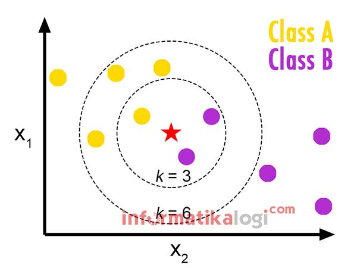

Metode KNN¶
Pengertian KNN¶
K-nearest neighbors atau knn adalah algoritma yang berfungsi untuk melakukan klasifikasi suatu data berdasarkan data pembelajaran (train data sets), yang diambil dari k tetangga terdekatnya (nearest neighbors). Dengan k merupakan banyaknya tetangga terdekat. Algoritma metode KNN sangatlah sederhana, bekerja dengan berdasarkan pada jarak terpendek dari sample uji.
Algoritma Perhitungan KNN¶
- Menentukan parameter K sebagai banyaknya jumlah tetangga terdekat dengan objek baru.
- Menghitung jarak antar objek/data baru terhadap semua objek/data yan gtelah di training.
- Urutkan hasil perhitungan tersebut.
- Tentukan tetangga terdekat berdasarkan jarak minimum ke K.
- Tentukan kategori dari tetangga terdekat dengan objek/data.
- Gunakan kategori mayoritas sebagai klasifikasi objek/data baru.
Rumus Euclidian Distance¶
Euclidean distance adalah perhitungan jarak dari 2 buah titik dalam Euclidean space. Euclidean space diperkenalkan oleh Euclid, seorang matematikawan dari Yunani sekitar tahun 300 B.C.E. untuk mempelajari hubungan antara sudut dan jarak. Euclidean ini berkaitan dengan Teorema Phytagoras dan biasanya diterapkan pada 1, 2 dan 3 dimensi. Tapi juga sederhana jika diterapkan pada dimensi yang lebih tinggi.
Contoh Perhitungan Sederhana¶
Contoh Kasus¶
Misalnya ada sebuah rumah yang berada tepat di tengah perbatasan antara Kota Bandung dan Kabupaten Bandung, sehingga pemerintah kesulitan untuk menentukan apakah rumah tersebut termasuk kedalam wilayah Kota Bandung atau Kabupaten Bandung.
Kita bisa menentukannya dengan menggunakan Algoritma k-NN, yaitu dengan melibatkan jarak antara rumah tersebut dengan rumah-rumah yang ada disekitarnya (tetangganya).
Pertama, kita harus menentukan jumlah tetangga yg akan kita perhitungkan (k), misalnya kita tentukan 3 tetangga terdekat (k = 3).
Kedua, hitung jarak setiap tetangga terhadap rumah tersebut, lalu urutkan hasilnya berdasarkan jarak, mulai dari yang terkecil ke yang terbesar.
Ketiga, ambil 3 (k) tetangga yg paling dekat, lalu kita lihat masing-masing dari tetangga tersebut apakah termasuk kedalam wilayah Kota atau Kabupaten. Ada 2 kemungkinan:
-
Bila dari 3 tetangga tersebut terdapat ada 2 rumah yg termasuk kedalam wilayah Kota Bandung, maka rumah tersebut termasuk kedalam wilayah Kota Bandung.
-
Sebaliknya, bila dari 3 tetangga tersebut terdapat 2 rumah yg termasuk kedalam wilayah Kabupaten Bandung, maka rumah tersebut termasuk kedalam wilayah Kabupaten Bandung.

Dalam menentukan nilai k, bila jumlah klasifikasi kita genap maka sebaiknya kita gunakan nilai k ganjil, dan begitu pula sebaliknya bila jumlah klasifikasi kita ganjil maka sebaiknya gunakan nilai k genap, karena jika tidak begitu, ada kemungkinan kita tidak akan mendapatkan jawaban.
Program KNN Pytohn¶
Link Refrensi¶
https://www.ketutrare.com/2018/11/algoritma-k-nearest-neighbor-dan-contoh-soal.html
http://cgeduntuksemua.blogspot.com/2012/03/pengertian-kelebihan-dan-kekurangan-k.html
https://medium.com/bee-solution-partners/cara-kerja-algoritma-k-nearest-neighbor-k-nn-389297de543e
https://id.wikipedia.org/wiki/KNN
https://informatikalogi.com/algoritma-k-nn-k-nearest-neighbor/
https://blogs.itb.ac.id/anugraha/2014/09/10/teori-pengukuran-jarak/
https://www.cut-the-knot.org/pythagoras/DistanceFormula.shtml